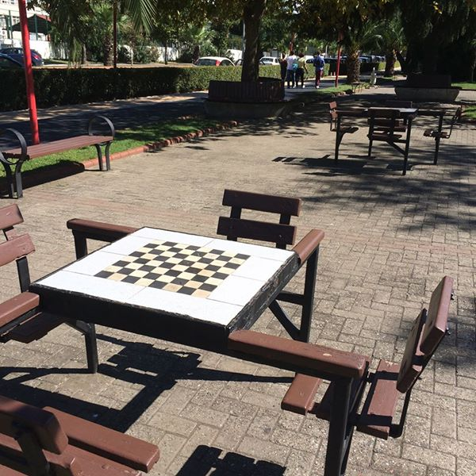

Hrají šachy, dámu a řadu dalších her, které ani neznám. Tady v Ergli mají navíc hrací stoly podél pobřeží. Když nemáte co dělat, přijdete sem, posadíte se a za pár minut si k vám někdo přisedne. Chcete-li, tak vám číšník z jedné z mnoha kaváren okolo přinese dohodnutou hru a něco k jídlu a pití (nejčastěji čaj, který se tady pije po hektolitrech) a můžete začít hrát. Takhle funguje turecká seznamka.
Jak funguje turecká seznamka 4.9.2016
V každé turecké restauraci hraje vždy tak minimálně polovina hostů deskové hry. V pizzeriích, fastfoodech, luxusních restauracích i v těch z poslední cenové kategorie.
